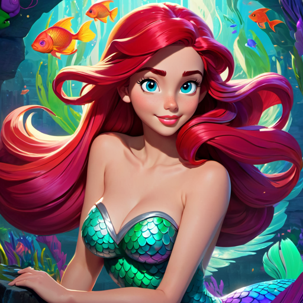

Info-"Ariel, de Kleine Zeemeermin," oorspronkelijk geschreven door Hans Christian Andersen,
vertelt het verhaal van Ariel, een zeemeermin die gefascineerd is door de wereld van de mensen.
Wanneer ze verliefd wordt op een prins, gaat ze een gevaarlijke deal aan met de zeeheks Ursula.
In ruil voor haar stem krijgt Ariel menselijke benen om op het land te lopen en de prins te verleiden.
Echter, de betovering heeft een prijs: als de prins niet verliefd wordt en met Ariel trouwt, zal ze terugkeren
naar de zee als schuim. Ondanks de uitdagingen slaagt Ariel erin de prins voor zich te winnen,
maar Ursula onthult haar ware bedoelingen. In een dramatische confrontatie triomfeert Ariel uiteindelijk,
maar niet zonder offers. Hoewel ze haar stem terugkrijgt, moet ze afstand doen van haar leven als zeemeermin.
Het verhaal verkent thema's van liefde, opoffering en de zoektocht naar identiteit, en het eindigt met Ariel
die haar eigen pad kiest, zij het met een diepgaand begrip van de consequenties van haar keuzes.
De film is uitgekomen in 1989 op 17 November.
het bekenste nummer is: Dat is mijn wens
